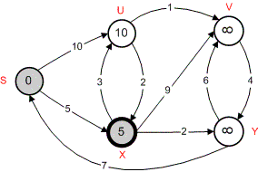

O algoritmo de Dijkstra é o mais famoso dos algoritmos para cálculo de
caminho de custo mínimo entre vértices de um grafo e, na prática, o
mais empregado.
Escolhido um vértice como raiz da busca, este algoritmo calcula o custo mínimo deste vértice para todos os demais vértices
do grafo. O algoritmo pode ser usado sobre grafos orientados (dígrafos), ou não, e admite que todas as arestas possuem pesos
não negativos (nulo é possível). Esta restrição é perfeitamente possível no contexto de redes de transportes,
onde as arestas representam normalmente distâncias ou tempos médios de percurso; poderão existir, no entanto,
aplicações onde as arestas apresentam pesos negativos, nestes casos o algoritmo não funcionará
corretamente.
Assumiremos um conjunto, chama-lo-emos PERM, que contém inicialmente apenas o vértice fonte (raiz da busca) s. A qualquer momento PERM contém todos os vértices para os quais já foram determinados
os menores caminhos usando apenas vértices em PERM a partir de s. Para cada vértice z fora de PERM
matemos a menor distância dist[z] de s a z usando caminhos onde o único vértice que não está em PERM seja z.
É necesssário também armazenar o vértice adjacente (precedente) a z neste caminho em path[z].
Como fazer com que PERM cresça, ou seja, qual vértice deve ser incluído em PERM a seguir ? Tomamos o vértice, entre todos os que ainda não pertencem a
PERM, com menor distância dist. Acrescentamos então este vértice, chamemo-lo de current, a PERM,
e recalculamos as distâncias (dist) para todos os vértices adjacentes a ele que não estejam em PERM, pois pode haver um caminho menor a partir de
s, passando por current, do que aquele que havia antes de current ser agregado a PERM. Se houver um caminho mais
curto precisamos também atualizar path[z] de forma a indicar que current é o vértice adjacente a z pelo novo
caminho mínimo.
Vejamos o funcionamento do algoritmo sob uma outra representação:
1) Defini-se inicialmente o nó de origem (raiz), neste caso s, e inclui-se este nó em PERM. Atribui-se zero a sua distância (dist[s]) porque o custo de ir de s a s é obviamente 0. Todos os outros nós i tem suas distâncias (dist[i]) inicializadas com um valor bastante grande ("infinito").
|
|
2) A partir de s consulta-se os vértices adjacentes a ele, que no grafo G são u e x.
Para todos os vértices adjacentes, que chamaremos z, calcula-se:
Se dist[z] > dist[s] + peso(s, z)
dist[z] = dist[s] + peso(s, z)
path[z] = s
Fim Se
|
|
3) Dentre todos os vértices não pertencentes a PERM escolhe-se aquele com a menor distância. Neste caso é o vértice x, pois dist[x] = 5.
|
 |
4) Então, inclui-se x em PERM e a partir de x consulta-se os vértices adjacentes a ele que não estão em PERM, que no grafo G são u, v e y.
Para todos os vértices adjacentes, que chamaremos z, calcula-se:
Se dist[z] > dist[x] + peso(x, z)
dist[z] = dist[x] + peso(x, z)
path[z] = x
Fim Se
|
|
5) Dentre todos os vértices não pertencentes a PERM escolhe-se aquele com a menor distância. Neste caso é o vértice y, pois dist[y] = 7.
|
|

|
6) Inclui-se então y em PERM e a partir de y consulta-se os vértices adjacentes a ele que não estão em PERM, que no grafo G é apenas o vértice v.
Se dist[v] > dist[y] + peso(y, v)
dist[v] = dist[y] + peso(y, v)
path[v] = y
Fim Se
|
|
7) Dentre todos os vértices não pertencentes a PERM escolhe-se aquele com a menor distância. Neste caso é o vértice u, pois dist[u] = 8.
|
|
8) Inclui-se então u em PERM e a partir de u consulta-se os vértices adjacentes a ele que não estão em PERM, que no grafo G é apenas o vértice v.
Se dist[v] > dist[u] + peso(u, v)
dist[v] = dist[u] + peso(u, v)
path[v] = u
Fim Se
|
|
9) Dentre todos os vértices não pertencentes a PERM escolhe-se aquele com a menor distância. Neste caso é o único vértice restante v e dist[v] = 9.
|
|
10) Por fim faz-se v pertencer a PERM. Neste ponto, todos os vértices já estão em PERM e a busca é finalizada.
|
|
Analisaremos agora, nos links abaixo, implementações do algoritmo de Dijkstra em grafos representados por matriz e lista de adjacências.